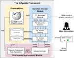
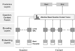
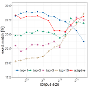
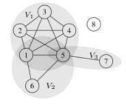
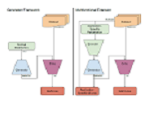

Bernhard Kratzwald's Homepage

I am a doctoral student at the Chair of Management Information System, ETH Zurich. I started in October 2017 working with Prof. Stefan Feuerriegel.
In my thesis, I focus on text-based information systems, in particular question-answering systems and machine comprehension models. My main interest is on challenges that occur after the offline training phase. E.g. How do QA systems adapt to varying corporas? How can QA systems continue to improve from user interactions? Etc.
Next to my thesis I maintain our GPU cluster. I am also interested in: ChatBots, Deep Learning and Neural Networks in general, Reinforcement Learning and Multi-armed Bandits, as well as many more...
Selected Publications

Learning from On-Line User Feedback in Neural Question Answering on the Web
Bernhard Kratzwald and Stefan Feuerriegel
in The Web Conference (formerly WWW), 2019

Putting Question-Answering Systems into Practice: Transfer Learning for Efficient Domain Customization
Bernhard Kratzwald and Stefan Feuerriegel
in ACM Transactions on Management Information Systems (TMIS), 2019; Volume/Issue TBA

Adaptive Document Retrieval for Deep Question Answering
Bernhard Kratzwald and Stefan Feuerriegel
in Empirical Methods in Natural Language Processing (EMNLP), 2018
Deep learning for affective computing: text-based emotion recognition in decision support
Bernhard Kratzwald, Suzana Ilic, Mathias Kraus, Stefan Feuerriegel and Helmut
Prendinger
in Decision Support Systems (DSS), 2018; Volume 115, Pages 24-35
Selected Preprints

Sample Complexity Bounds for Recurrent Neural Networks with Application to Combinatorial Graph Problems
Nil-Jana Akpinar, Bernhard Kratzwald, Stefan Feuerriegel

Improving Video Generation for Multi-functional Applications
Bernhard Kratzwald, Zhiwu Huang, Danda Pani Paudel, Acharya Dinesh, and Luc Van Gool
Education